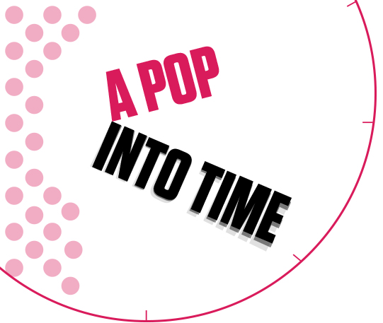
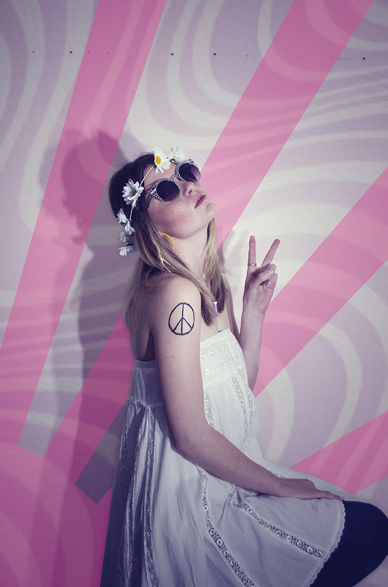
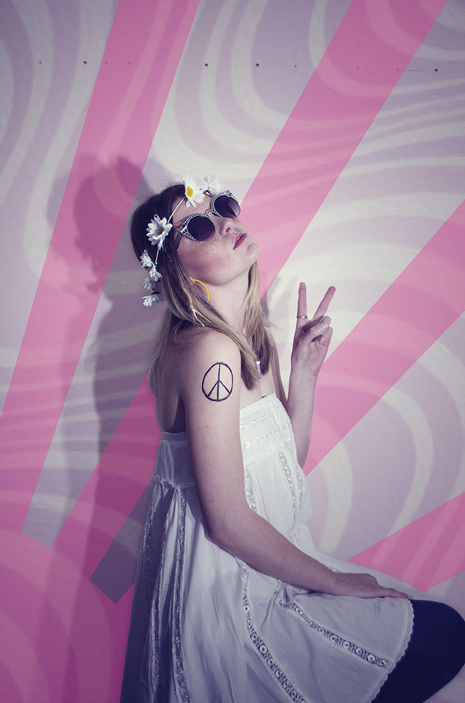
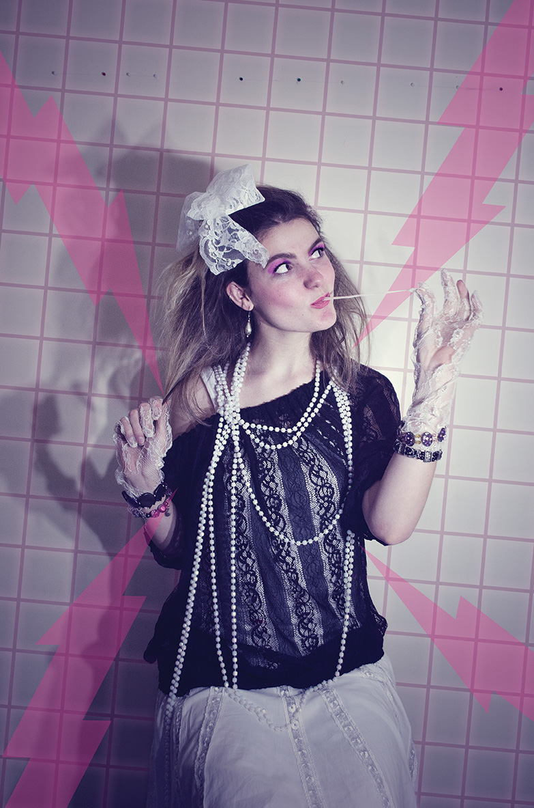

CONTOURCULTURE

Macey Radburn
A Pop into Time
A view into how popular culture shapes our individuality and how it is a real value to the story of humanity.
To me, current popular culture is everywhere. It’s what’s on TV, the latest buzz on the Internet, the latest movie or book franchise, latest games about zombies or war, or the war on zombies, the newest music and many other things that surround us daily. Pop culture also makes us who we are. It is a way to make up our individual identity and to mark our interests and love for something. Whether you are 5 or 105, pop culture is relevant to you and makes you who you are. So, ‘How does this make you who you are?’ I hear you asking. Well, think about it, I like The Hunger Games Books and movies, The Walking Dead TV show and use Instagram and Facebook daily. You on the other hand may prefer Pinterest and watching Breaking Bad and Dexter. Others may play Grand Theft Auto all day every day and others may watch people play it on YouTube, all day every day. It’s that simple.
Each one of us has our own pop culture menu. Look at your apps, your bookmarks, your songs playlist, TV shows, movies: what you ‘re saying on your favorite social net. Smartphones today are the center of your pop culture.
 

"It doesn’t cure diseases, topple nations or make technological advances but pop culture reveals many facets of human behavior throughout history."
Although not used in our lexicon back then - modern pop culture (as we know it) began with the baby boomer generation and “buying power.” As boomers came of age with their disposable incomes - that influence led the pop culture revolution. It began during the 1950’s with rock n’ roll, TV, Dick Clark and the hoola hoop, transistor radios, into the 1960’s and beyond.
The term “pop culture” became mainstream during the 1980’s. Before this, we used “popular” to describe things such as, top song playlists or “pop” as in art or “best” or “top” selling, as in books. Pop culture is fun, fascinating and is at the center of our lives. Test yourself. The last time you spoke to your good friend, wasn’t pop culture part of that conversation?
Popular culture is a vital component in the story of humanity. It doesn’t cure diseases, topple nations or make technological advances but pop culture reveals many facets of human behavior throughout history. It is hard to define the human experience without it. Through this we can define countries and decades, for example, what we wear. You think of the 1920’s and you will think of women wearing short hair, flapper dresses and heels. You hear the 1970’s and think skin tight t-shirts, medallions and chest hair. The 1980’s brought in fluoro, ripped jeans and leg warmers whilst the 90’s brought us the mullet, flannel shirts and camouflage pants. When I think of the word culture I think of a group of people. Relating it to pop culture you think of things like conventions, expos and live events.
Whist it can make you unique in a sense, it also brings people together. Take Comic Con for example, everyone knows about it and I guess it too has become a pop culture icon. Comic Con was created in the 70’s to bring people together to interact about movies, TV shows and comics. Racking in 300 on its first year, it now draws in over 130,000 people from all over the world to celebrate all things pop culture. Other examples of this are things such as Soundwave for musical fans, Vid con for fans of Internet stars, E3 (Electronic Entertainment Expo) for gamers and probably many more out there for your own little culture of pop goodness.
Pop Art was the art of popular culture. It popped into the art scene in the 60’s and was an interest in mass-media, mass-production and mass-culture. It coincided with the globalization of pop music and youth culture, personified by Elvis and the Beatles. Pop Art was brash, young and fun and hostile to the artistic establishment. The subject matter became far from traditional “high art” themes of morality, mythology, and classic history; rather, pop artists celebrated commonplace objects and people of everyday life, in this way seeking to elevate popular culture to the level of fine art. Perhaps owing to the incorporation of commercial images, Pop art has become one of the most recognizable styles of modern art.

To sum up, pop culture is all around. It is a way to look back, reflect, enjoy and have fun. It has been with us for years and will continue to form our behaviour and our future. Embrace your culture in the pop world, afterall it brings us together.